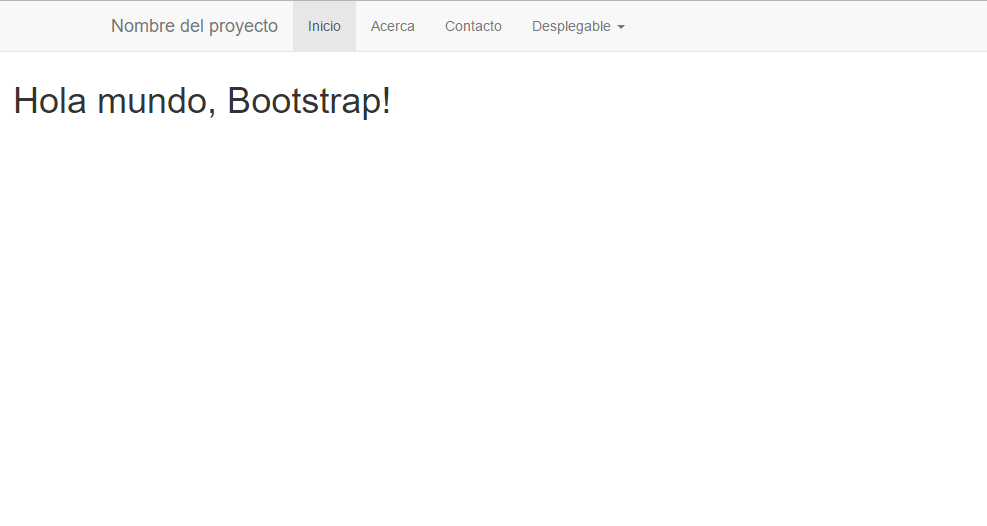

Note
| Fecha | Autores |
|---|---|
| 14 Febrero 2017 |
|
©2017 Wladimir Szczerban
Excepto donde quede reflejado de otra manera, la presente documentación se halla bajo licencia: Creative Commons (Creative Commons - Attribution - Share Alike: http://creativecommons.org/licenses/by-sa/3.0/deed.es)
Crearemos una página Web que contiene un template básico de Bootstrap. Esta página contendrá una barra de navegación fija en la parte superior de la página.
Crear una carpeta llamada visor dentro del directorio htdocs del Apache.
C:\ms4w\Apache\htdocs\visor
Crear el archivo movil.html dentro de la carpeta visor. En este archivo crearemos la estructura básica del nuestro html y cargaremos las librerías jQuery y Bootstrap. Para ello escribir los siguiente:
<!DOCTYPE html>
<html>
<head>
<title>visor reponsivo con Leaflet</title>
<meta charset="utf-8">
<meta http-equiv="X-UA-Compatible" content="IE=edge,chrome=1">
<meta name="description" content="Demo project with jQuery">
<meta name="viewport" content="width=device-width, initial-scale=1">
<link rel="stylesheet" href="https://maxcdn.bootstrapcdn.com/bootstrap/3.3.7/css/bootstrap.min.css" integrity="sha384-BVYiiSIFeK1dGmJRAkycuHAHRg32OmUcww7on3RYdg4Va+PmSTsz/K68vbdEjh4u" crossorigin="anonymous">
</head>
<body>
<h1>Hola mundo, Bootstrap!</h1>
</body>
<script src="https://code.jquery.com/jquery-3.1.1.min.js" integrity="sha256-hVVnYaiADRTO2PzUGmuLJr8BLUSjGIZsDYGmIJLv2b8="
crossorigin="anonymous"></script>
<script src="https://maxcdn.bootstrapcdn.com/bootstrap/3.3.7/js/bootstrap.min.js" integrity="sha384-Tc5IQib027qvyjSMfHjOMaLkfuWVxZxUPnCJA7l2mCWNIpG9mGCD8wGNIcPD7Txa" crossorigin="anonymous"></script>
</html>
Agregar la barra de navegación (navbar). Justo debajo de donde comienza la etiqueta body escribir lo siguiente:
<!-- barra de navegación fija -->
- <nav class=”navbar navbar-default navbar-fixed-top”>
- <div class=”container”>
- <div class=”navbar-header”>
- <button type=”button” class=”navbar-toggle collapsed” data-toggle=”collapse” data-target=”#navbar” aria-expanded=”false” aria-controls=”navbar”>
<span class=”sr-only”>Toggle navigation</span> <span class=”icon-bar”></span> <span class=”icon-bar”></span> <span class=”icon-bar”></span>
</button> <a class=”navbar-brand” href=”#”>Nombre del proyecto</a>
</div> <div id=”navbar” class=”collapse navbar-collapse”>
- <ul class=”nav navbar-nav”>
<li class=”active”><a href=”#”>Inicio</a></li> <li><a href=”#about”>Acerca</a></li> <li><a href=”#contact”>Contacto</a></li> <li class=”dropdown”>
<a href=”#” class=”dropdown-toggle” data-toggle=”dropdown” role=”button” aria-haspopup=”true” aria-expanded=”false”>Desplegable <span class=”caret”></span></a> <ul class=”dropdown-menu”>
<li><a href=”#”>Acción</a></li> <li><a href=”#”>Otra acción</a></li> <li><a href=”#”>Más acciones</a></li> <li role=”separator” class=”divider”></li> <li class=”dropdown-header”>Cabecera de navegación</li> <li><a href=”#”>Enlace separado</a></li> <li><a href=”#”>Otro enlace separado</a></li>
</ul>
</li>
</ul>
</div><!–/.nav-collapse –>
</div>
</nav>
Abrir el navegador y ver que se muestra la barra de navegación de nuestra aplicación. Podemos ver que el texto Hola mundo, Bootstrap! queda debajo de la barra de navegación.
http://localhost:81/visor/movil.html
Corregir el error de que el contenido de la página queda debajo de la barra de navegación. Para ello crearemos el elemento contenedor donde pondremos todo el contenido de nuestra Web. Debajo de donde termina la definición de la barra de navegación escribimos los siguiente:
<!-- inicio contenedor del contenido -->
<div class="container-fluid">
</div>
Mover el elemento H1 con el texto Hola mundo, Bootstrap! dentro del contenedor
Si recargamos la página en el navegador vemos que todavía sale el contenido debajo del navbar. Esto es debido a que falta definir el estilo del contenedor. Para esto escribimos lo siguiente justo antes de donde cerramos el head de la página.
<style type="text/css">
body > .container-fluid {
padding: 60px 15px 0;
}
</style>
Ahora si recargamos la página veremos que el contenido aparece correctamente.
